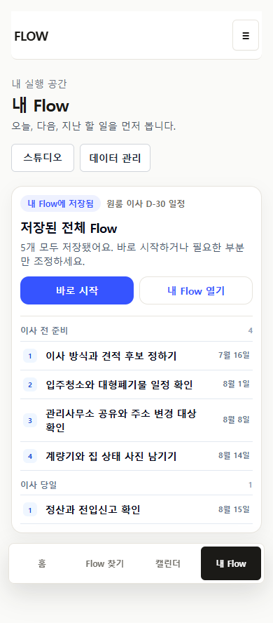
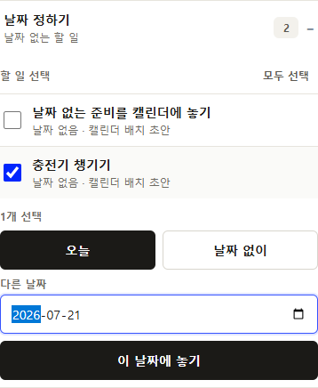
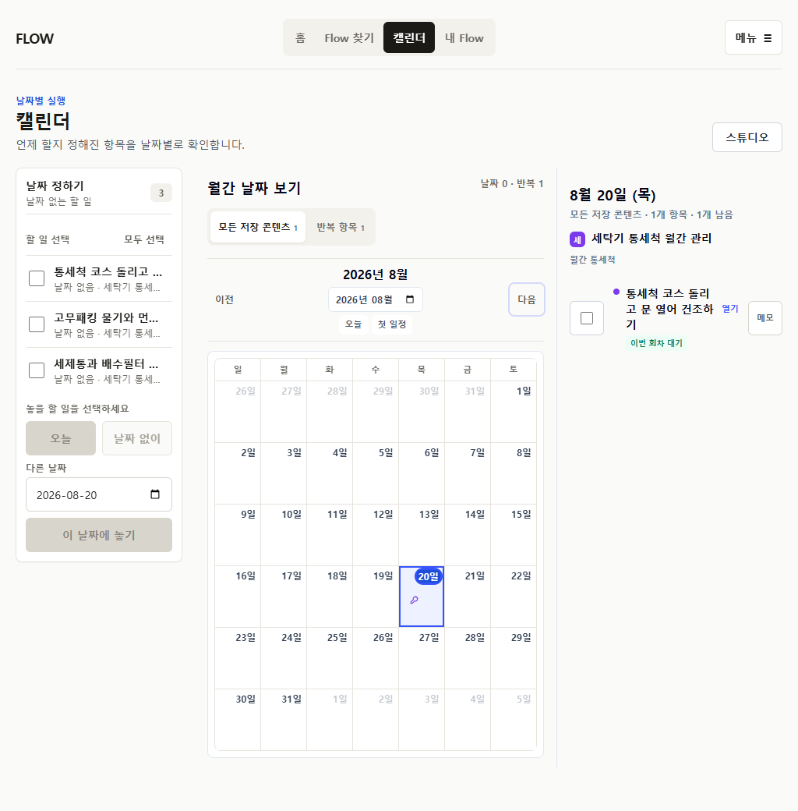
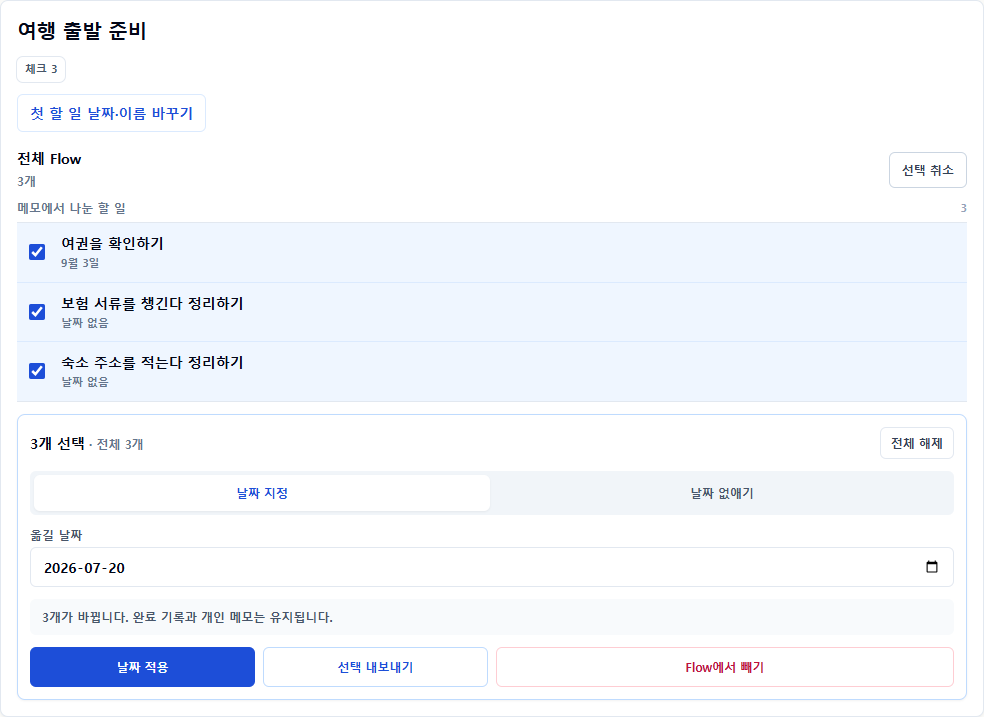
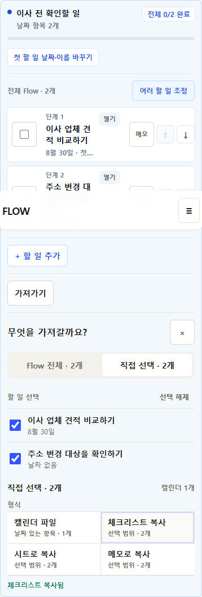
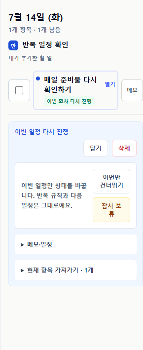

Keep
Option B의 9개 화면 계약, 전체 Flow 중심, 실행과 일정 배치의 분리, progressive edit, reversible completion, scope-first export.
P25 INTERNAL CLOSEOUT · 2026-07-20
P25는 화면을 하나 더 추가한 작업이 아니다. 저장한 전체 Flow를 정본으로 두고 My Flow, Calendar, 완료, export를 같은 개인 실행 상태의 projection으로 맞췄다.
Option B의 9개 화면 계약, 전체 Flow 중심, 실행과 일정 배치의 분리, progressive edit, reversible completion, scope-first export.
public 설명 밀도, 1024px Calendar 밀도, 고급 편집 경로 길이. 기능 계약은 유지하고 비교 설계부터 한다.
자동화와 시뮬레이션은 내부 통합 증거다. 첫 사용 이해도와 반복 사용 가치는 아직 증명하지 않았다.

저장 직후 한 항목이 아니라 전체 artifact를 확인한다.

날짜 없는 일은 My Flow에서 실행하고 Calendar에서는 일정에 놓는다.

반복 source cadence와 occurrence identity를 Calendar와 ICS가 공유한다.

완료 체크와 분리된 임시 선택 모드에서 날짜와 export 범위를 조정한다.

사용자가 수용한 문장만 stable item으로 저장하고 다시 편집한다.

series, occurrence, 완료, 건너뜀, 보류와 재개를 다른 상태로 유지한다.
main에 병합12 / 12, overflow/error 0